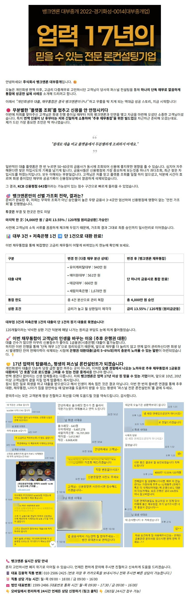
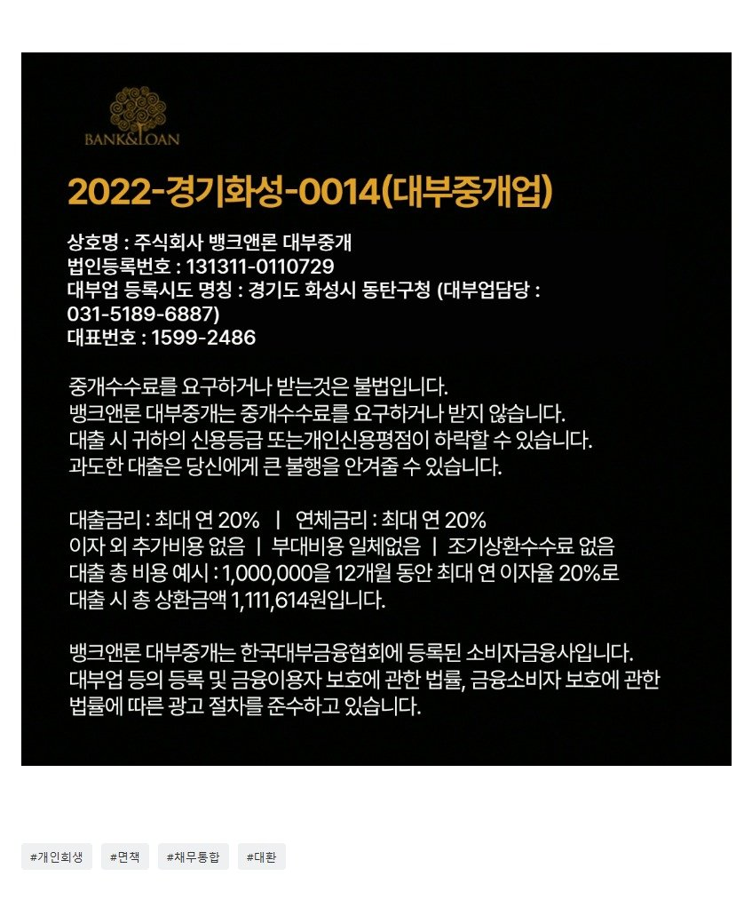

[개인회생자대출] 면책후 대부·저축은행 4건 고금리 채무, 13.55% 10년상환으로 깔끔하게 묶어낸 실제 성공 사례! (개인회생중이신분들 필독 필독!!)

https://www.banknloan.kr/대출상품/개인회생자대출
원본 백업에 없거나 외부 접근이 제한된 이미지입니다.
주식회사 뱅크앤론 대부중개 - 개인회생자 대출
주식회사 뱅크앤론 대부중개 설명
www.banknloan.kr
? 카톡 채널 실시간 상담 https://pf.kakao.com/_pxeDsM
https://cafe.naver.com/cityman88/311321
원본 백업에 없거나 외부 접근이 제한된 이미지입니다.
[필독사례모음] 개인회생자대출 필독 매니저 사례 (개인회생자대출 알아보시는분들 필독필독!!)
[개인회생자대출] 회생면책후에도 끝까지 대환대출 도움드리는 뱅크앤론 (면책직후 대출3건을 3100만 15.7% 채무통합 대환에 성공한 사례) https://cafe.naver...

https://cafe.naver.com/cityman88/311533